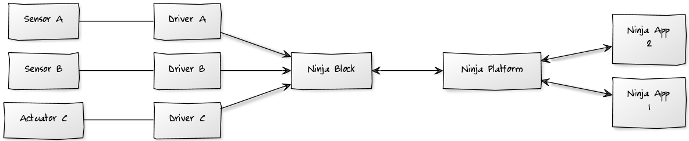
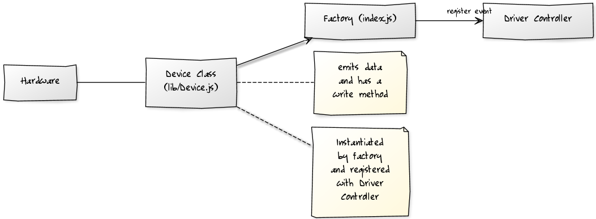
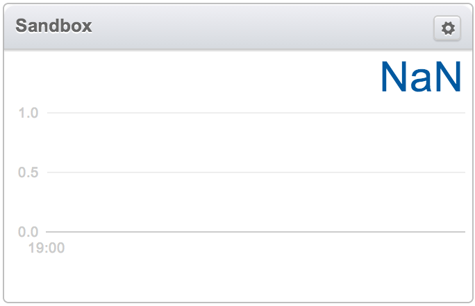
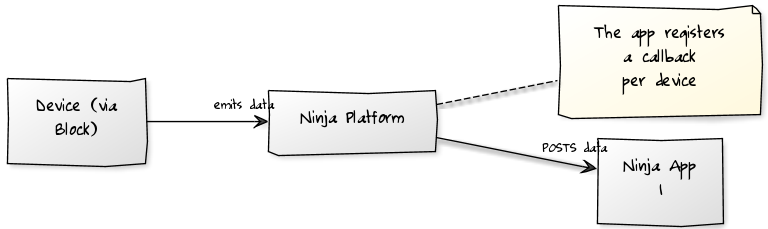
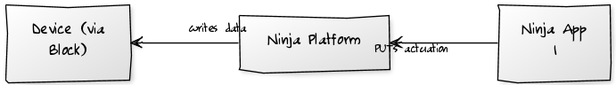
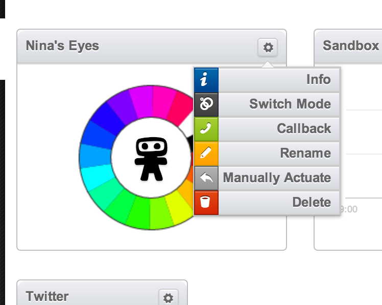
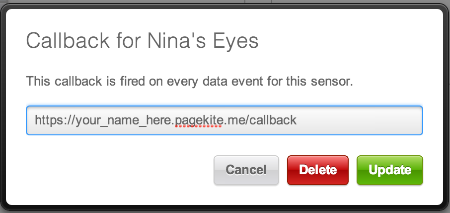

Node.PH Ninja Blocks Workshop
Welcome! Here is quickstart information to get you up and running as quickly as possible. Please click the track you are running on the top right.

Sensor Track.
Driver Track.
In this track we are going to hook some hardware up to the Ninja platform. Drivers are pieces of code that run in the Ninja client and present devices to the platform.

Getting Started
Step 1 - get the client code
$ git clone https://github.com/ninjablocks/client.git
$ cd client
$ ./bin/install.sh
Step 2 - get the Ninja CLI tool
$ npm install -g ninja-toolbelt
Step 3 - create a driver scaffold
$ ninja create drivers/my-first-driver
$ cd drivers/my-first-driver
$ npm init
$ cd ../..
Step 4 - Run the client code in hacking mode
$ NODE_ENV=hacking node client
The start of stdout should look like this:
$ NODE_ENV=hacking node client
[Mon, 22 Apr 2013 21:18:06 GMT] (DEBUG) Binding default loadToken method
[Mon, 22 Apr 2013 21:18:06 GMT] (DEBUG) Binding default saveToken method
[Mon, 22 Apr 2013 21:18:06 GMT] (DEBUG) Binding default loadSerial method
[Mon, 22 Apr 2013 21:18:06 GMT] (DEBUG) Binding default saveSerial method
[Mon, 22 Apr 2013 21:18:06 GMT] (info) Successfully loaded token from file
[Mon, 22 Apr 2013 21:18:06 GMT] (info) Successfully loaded serial from file
[Mon, 22 Apr 2013 21:18:06 GMT] (info) This Ninja's Serial: XXXXXXXXXXXXXXXX
[Mon, 22 Apr 2013 21:18:06 GMT] (info) loadModule: platform
[Mon, 22 Apr 2013 21:18:06 GMT] (DEBUG) versioning: using version callback (platform)
[Mon, 22 Apr 2013 21:18:06 GMT] (info) platform: No device specified
Copy the serial number to your clipboard, in this case XXXXXXXXXXXXXXXX, you will need it in the next step.
Step 5 - pair this client
Go to a.ninja.is and sign in. When you have reached the home screen, click the 'Pair Block' button in the top right of the screen:

Next, paste the serial number you copied in the previous step in the dialogue box and hit "Submit". Your browser should look like this:

And your client stdout should look like this:
[Mon, 22 Apr 2013 21:18:10 GMT] (info) Attempting to activate...
[Mon, 22 Apr 2013 21:31:38 GMT] (DEBUG) Attempting to save token to file...
[Mon, 22 Apr 2013 21:31:38 GMT] (info) Successfully saved token to file
[Mon, 22 Apr 2013 21:31:38 GMT] (info) Received authorization, confirming...
[Mon, 22 Apr 2013 21:31:38 GMT] (info) Confirmed authorization
[Mon, 22 Apr 2013 21:31:38 GMT] (info) Please restart this process to connect!
➜ client git:(master) ✗
Step 6 - see your driver on the dashboard
Go back to a.ninja.is/home. You should see a widget that looks like this:

Step 7 - look through some sample drivers for inspiration
- Sample driver: Report CPU usge
- Sample driver: Mac iSight Driver
- Sample driver: Controlling Philips Hue
- Sample driver: Wifi Scanner that reports analytics about nearby wifi devices
Gotchas
- DA (data value) MUST be a string
- G (port/channel) MUST be a string
- V (vendor ID) MUST be a number
- D (device ID) MUST be a number
HAL9000 / Espionage
Core Concepts
- A 'Ninja app' is a state machine that lives in the cloud.
- It can send commands to devices, and it receives data from a device via a 'callback'.
- A 'callback' is a URL you register against a device that the Ninja platform will POST to with data when it receives it. It must be publicly addressable.
- We will authenticate our apps today with your
user_access_token


Step 1 - get your user_access_token
You retrieve this in the API tab of the settings page. It is the 'API Access Token'.
Step 2 - clone our sample app
$ git clone https://github.com/thatguydan/nodeph-sample-app.git
$ cd nodeph-sample-app
$ npm install
Step 3 - Edit the app's configuration
$ vim routes/index.js
Edit line 3 & 4 inserting the user_access_token retrieved in Step 1 and the GUID of the device (will be demoed on stage).
Step 4 - Setup PageKite to tunnel HTTP requests to your local machine.
$ curl -s https://pagekite.net/pk/ |sudo bash
$ pagekite.py 3000 your_name_here.pagekite.me
Step 5 - run the app
$ node app.js
Step 6 - Register a callback against the RGB LED device through PageKite.
Go back to the dashboard and find the 'Ninjas Eyes' widget. Click on the cog, and click callback:

Then add your pagekite url to start receiving callbacks from the Ninja platform. Note in the sample app we have a route for /callback, so you should only need to replace your_name_here in the below screen shot.

Step 7 - Hack around with routes/index.js
Try adding callbacks against different devices, and actuating other devices.
Gotchas
- Every data value through Ninja MUST be a string.
- The RF433 MHz device receives strings that look like binary from multiple 'devices'. Due to this, it is necessary to do string equality on callbacks, looking for a known string.
Useful links
- Nina Blocks Node Library README
- Dial-o-spresso - Ninja powered coffee machine hack. Does not use callbacks (code)
- Video tutorial on creating an app in 60 seconds